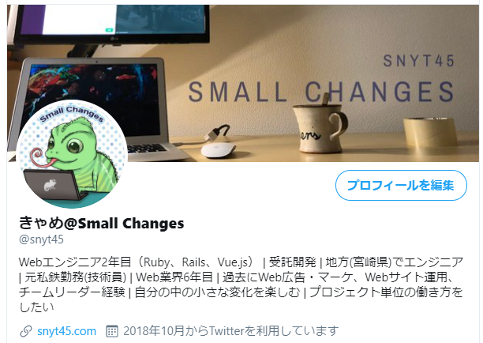
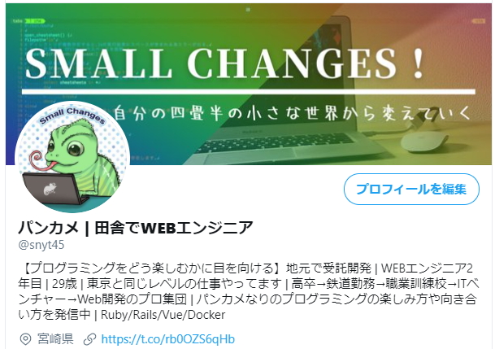
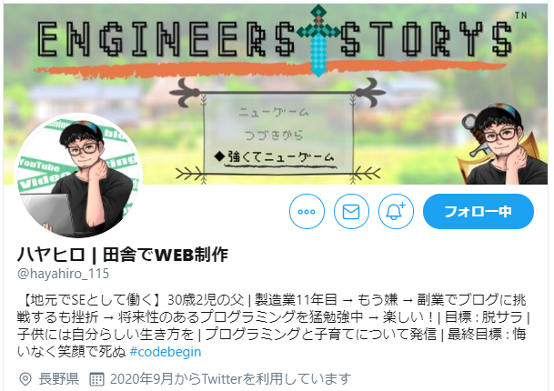
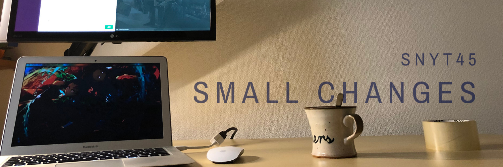
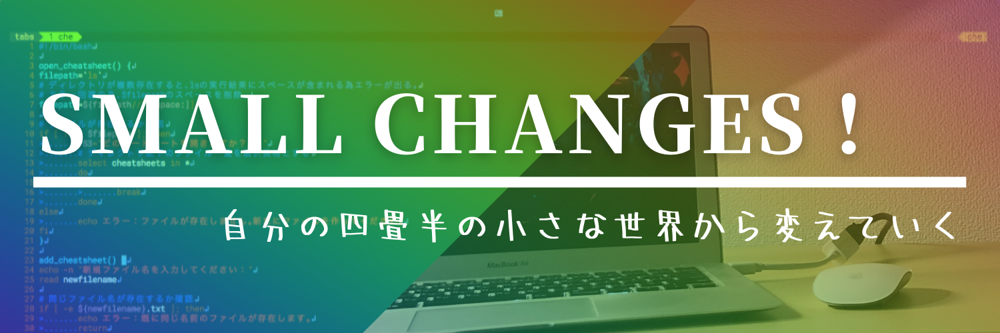

前回twitterのプロフィールの見栄えを変えました。
そこから、アイコン追加したり若干変更はしています。
今回はアカウント名とプロフィールとヘッダー画像を変更しました。
せっかくなので、そのときのメモとbefore、afterを残しておきたいと思います。
最終こんな感じになりました
先にこんな感じになったことを報告します。
個人的な感想ですが、変更後のほうがしっくりきてます。運用しながら改善していきたいです。
before

after

アカウント名
before
きゃめ@Small Changes
after
パンカメ | 田舎でWEBエンジニア
メモ
まずは、アカウント名を「きゃめ」から「パンカメ」に変えました。 アイコンのカメレオンがパンサーカメレオンという種類だからです。 あと、4文字のほうがなんか語呂がよくて好きなので！
次に、キャッチコピーを思いつくまま挙げてみました。
パンカメ | 田舎でSE
パンカメ | 田舎でWEBエンジニア
パンカメ | 小さな変化を楽しむSE
パンカメ | 小さな変化を楽しむエンジニア
パンカメ | Small Changes
パンカメ | SmallChanges!!
パンカメ | 29歳Webエンジニア
パンカメ | 地方Webエンジニア
パンカメ | 自分が楽しむSE
パンカメ | 考えることは楽しい
パンカメ | 一貫性のないキャリア
パンカメ | 未経験からWebエンジニア
パンカメ | 興味 → チャレンジ → 継続
パンカメ | Small Changesの人
パンカメ | 毎日小さな変化を起こす
パンカメ | スモールチェンジSE
パンカメ | 楽も続けば怠慢になる
パンカメ | 多動力
パンカメ | ポジティブ飽き性
パンカメ | 小さな変化が持つ大きな力
パンカメ | 学ぶカメレオン
パンカメ | カメレオン七変化
パンカメ | 七色カメレオン
パンカメ | 変化を作るカメレオン
以下は考えながら思いついたものをメモしたものです。
- 4文字のほうがしっくりくる！
- カタカタのほうがカメレオン感ある
- 右のキャッチコピーはどんな情報を発信するかで決めたい。でも軸ないんだよね。Small Changesがしっくりくる。何より面白いから続く。
- キャッチコピーは日本語のほうがインパクトある。特にポジティブ飽き性はインパクト強め(笑)
- Twitterをスマホで見てると、アカウント名も長すぎると見切れるから短いほうがいい。
- ポジティブ飽き性いいなー(笑)自分の定義としては、現状に飽きてもまた面白いものを探す、チャレンジする、面白かったら勝手に継続、辞めてもまた面白いと思えばチャレンジ。飽きそうになっても面白い面を探す。常に自分の中で面白いことをやっているつもり。ただし、面白くなくてもやるべきときはやる精神
- 今のところエンジニアが続いているのは自分の知らない世界が広すぎるので飽きそうになってもまた面白いことが見つかるから！
結局、シンプルイズベストな「田舎でWEBエンジニア」に落ち着きました。
「田舎でWEBエンジニア」は差別化としては弱いっちゃ弱いのでまたよさげなの思いついたら変えるかもしれません。
でも以前よりはどんな人かが分かりやすくなったと思います。
プロフィール
before
Webエンジニア2年目（Ruby、Rails、Vue.js） | 受託開発 | 地方(宮崎県)でエンジニア | 元私鉄勤務(技術員) | Web業界6年目 | 過去にWeb広告・マーケ、Webサイト運用、チームリーダー経験 | 自分の中の小さな変化を楽しむ | プロジェクト単位の働き方をしたい
after
【プログラミングをどう楽しむかに目を向ける】地元で受託開発 | WEBエンジニア2年目 | 29歳 | 東京と同じレベルの仕事やってます | 高卒→鉄道勤務→職業訓練校→ITベンチャー→Web開発のプロ集団 | パンカメなりのプログラミングの楽しみ方や向き合い方を発信中 | Ruby/Rails/Vue/Docker
メモ
以下は思いついた文言です。これらは結局入れていませんが・・・
やりたくないことから逃げてきた
ストレスのない田舎で暮らしたい
自分の生活に変化をつけたい
プロに囲まれて成長中
マイナスな面も発信
こんな自分でもSE出来てる
自分が変わることで見える景色を変えてきた
マインド多め
以下は考えながら思いついたものをメモしたものです。
- 考えていると、経歴を通して伝えたいことがあるなー
- もう少し目的を明確にしないと有名人アカウントでない限りフォローされるのは難しいよな。
- 今は頑張っている同士でフォローを増やしている感ある。
- 案件獲得など需要のある情報が発信できるわけでもない。。
- そもそもエンジニアであるということ自体が需要があるわけではあるが・・むしろ地道な道を歩いていると思う。
- でもやっぱりプログラミングってまじで挫折率高いのなとフォロしてくれた古い方々を見て思う。。Twitter上で観測しただけなので一概には言えない。。
- プログラミングをどう楽しむかみたいなことが正直大事なんよ。目先のことよりも、自分はそうしないと無理だったから。
- 自分にとってプログラミングは人生を楽しむチート
- パンカメなりのプログラミングの楽しみ方や向き合い方を発信 という文言は入れたい
ハヤヒロさんのプロフィールを参考にしました。
というかハヤヒロさんのプロフィールを見て読みやすいなーと思ってプロフィール変更に至りました。
見やすくないですか！？見やすいですよね。あとRPG感がいい感じに出ていて正直うらやましいです！

あとは、他と差別化するような文言を一番前に持ってきました。
また下記の記事も参考にしました。
Twitterのプロフィールをどう工夫するか。必要なのは3ポイント。│カップルブログ|たこみそ
ヘッダー
- Canvaを使いました
before

after

メモ
- 自分で作ったコードを薄く背景に文字重ねるのもあり
- 以下はヘッダー画像に文字入れしたい
- Small Changes 自分の中の小さな変化を楽しむ 自分の四畳半の小さな世界から変えていく ※四畳半というのは小さな世界という例え
まとめ
- twitterプロフィールの改善は楽しい！！
- ただ考えてもスカることが多いと思うので、「誰に」伝えるのかを意識する！